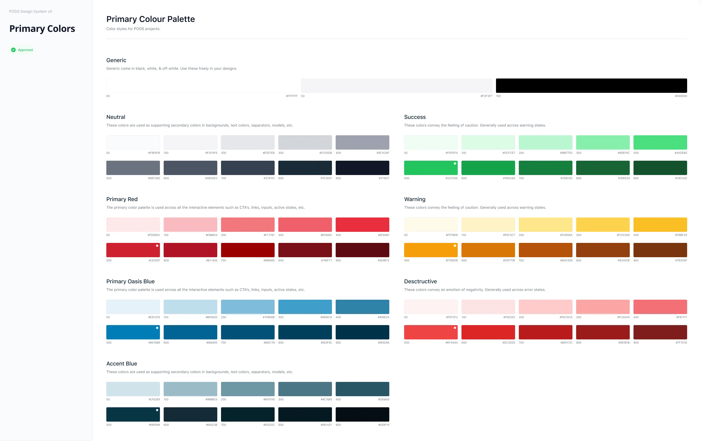
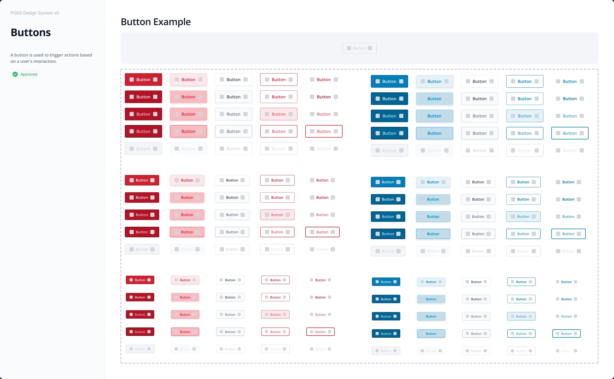
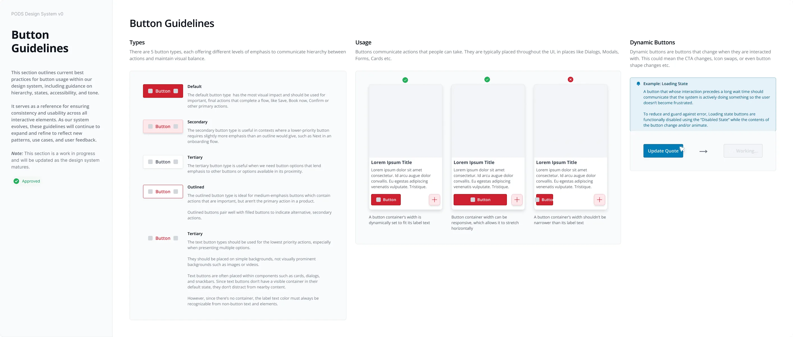

PODS · Design system · Case study
- PODS had a design system.
- On paper.
- In practice: four type sets, 800+ colors, and nobody who owned it.
- This is how it became one language. In four weeks.

PODS Design System
One governed language for three product areas.
- Role
- Senior UX Designer
- Scope
- Foundations, components, governance
- Timeline
- 4 weeks · 2026
- Teams
- Discovery · Booking · Post‑Booking
Act I — The problem
The problem
- Four design teams. Each inherited its own type set, and its own rules.
- 800+ colors. Designers solved the same problems differently.
- Engineers filled the gaps. Handoffs ran past an hour.
- Consistency depended on whoever touched the file last.
Turning point
I didn't start with components. I started with who owns what.
Discovery design
System direction owner
Engineering
Implementation partner
Booking
Needs & QA partner
Post‑Booking
Feedback & QA
- Before touching a single component, I brought tech leads, PMs, engineers, and designers together.
- Discovery design would own the system's direction: standards, quality, coherence.
- Engineering became the implementation partner.
- Booking brought real needs, and QA.
- Post‑Booking closed the loop with feedback and QA. One owner, clear partners.
Act II — Foundations
Foundations
- First, the basics every screen depends on.
- The same 800+ colors, consolidated.
- Seven named ramps. Tokenized and ready for engineering.

- The real thing: the palette, documented.
- Primary red: ten named steps, from tint to shade.
- Oasis blue: the same structure, so every ramp reads the same way.
- Type and color rolled out everywhere. Engineering saw low risk.
The trade‑off
The hardest conversation wasn't about design.
ProductRenaming and retroactive updates will pull engineers off the roadmap.
MeThen we don't ship it all at once.
NowType + color, retroactively
ForwardComponents, as surfaces come up for redesign
Consistency, without eating engineering hours.

Act III — Components
Components
- Then the patterns teams used most, and misused most.
- Every style and size, in one matrix.
- Every state defined: default, hover, pressed, focus, disabled.
- Red drives top‑of‑funnel actions. Blue carries mid‑funnel decisions.
- One source of truth for all three product areas.

- And every component ships with its documentation.
- Do's and don'ts replaced tribal knowledge. Reviews got faster.
- Edge cases, like loading, were visible before implementation began.
- The library doubles as onboarding.
The result
Hour‑long handoff walkthroughs became 15–20 minute implementation conversations.
Illustrative
Discovery
Book your containerBook your container
Get a quoteGet a quoteBooking
Book your containerBook your container
GET A QUOTEGet a quotePost‑Booking
Book your containerBook your container
Get A Quote →Get a quote- 3 → 1Aligned teams
- 1 ownerClear ownership
- StandardsRepeatable quality
Outcome
- Remember these three screens?
- Same product areas. Now one language.
- One owner, shared components, and standards instead of one‑off interpretation.
- Quality got easier to repeat.
“Quality and consistency of PODS designs from all teams has greatly risen.”
Want the full story, including what I'd change?
 More work
Cirkul Homepage
More work
Cirkul Homepage